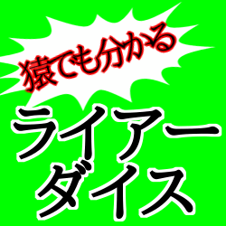

ライアーダイスの遊び方

概要
このゲームは2人から4人でプレイします 。各プレイヤーはカップに隠した自分のサイコロの出目を確認し、全プレイヤーのサイコロの出目と数を予想して宣言し合います。相手の宣言が嘘（ライアー）だと思ったらそれを指摘します。
準備
1.各プレイヤーに、さいころ5個、カップ1つ、毒薬カード2枚を配ります 。
ゲーム進行
1.各プレイヤーはカップでさいころを振り、机の上に伏せて置きます 。
2.全プレイヤーが振り終えたら、自分のサイコロの出目だけをこっそり確認します 。
3.親は、場にある全てのサイコロ（自分のも含む）について、「特定の出目」が「何個あるか」を自由に宣言します（例：「3」が「2個」） 。
4.次のプレイヤーは、前のプレイヤーの宣言に対し「ライアー」とコールするか、より強い宣言をします 。
※強い宣言とは：前の宣言より「多い数」（例：「3」が「3個」）を宣言するか、より「大きな出目」（例：「4」が「2個」）を宣言します 。
5.「ライアー」がコールされなかった場合、次のプレイヤーが同様に宣言を行います 。
「ライアー」の解決
1.いずれかのプレイヤーが「ライアー」とコールした場合、全プレイヤーはサイコロをオープンします 。
2.宣言が正しかったか（宣言された出目が宣言された数以上あったか）を調べます 。
・宣言が正だった場合：「ライアー」とコールしたプレイヤーが毒薬を1つ飲みます 。
・宣言が誤だった場合：「ライアー」と言われたプレイヤー（宣言者）が毒薬を1つ飲みます 。
3.毒薬を飲んだプレイヤーから次のラウンドが始まります 。
4.（注意）ラウンドが30秒経過した場合、宣言中のプレイヤーが毒薬を1つ飲みます 。
ゲームの終了と勝者
1.毒薬を2つ飲んだプレイヤーは脱落となります 。
2.プレイヤーが1人になるまでゲームは続き 、脱落するのが遅かった順に順位が決定します 。